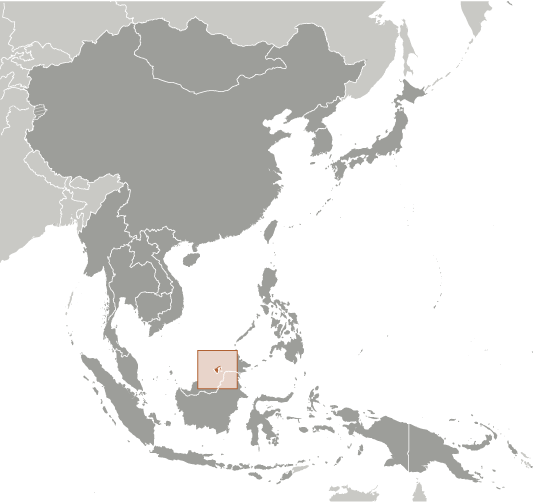
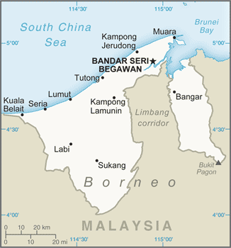
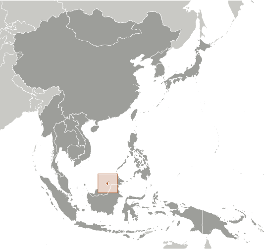
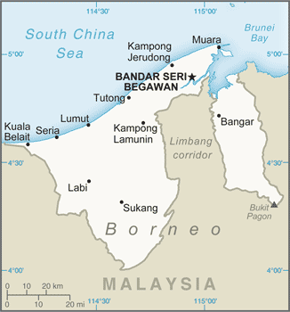

-
Introduction :: Brunei
-
Background:The Sultanate of Brunei's influence peaked between the 15th and 17th centuries when its control extended over coastal areas of northwest Borneo and the southern Philippines. Brunei subsequently entered a period of decline brought on by internal strife over royal succession, colonial expansion of European powers, and piracy. In 1888, Brunei became a British protectorate; independence was achieved in 1984. The same family has ruled Brunei for over six centuries. Brunei benefits from extensive petroleum and natural gas fields, the source of one of the highest per capita GDPs in the world. In 2017, Brunei celebrated the 50th anniversary of the Sultan Hassanal BOLKIAH’s accession to the throne.
-
Geography :: Brunei
-
Location:Southeastern Asia, along the northern coast of the island of Borneo, bordering the South China Sea and MalaysiaGeographic coordinates:4 30 N, 114 40 EMap references:Southeast AsiaArea:total: 5,765 sq kmland: 5,265 sq kmwater: 500 sq kmcountry comparison to the world: 173Area - comparative:slightly smaller than DelawareLand boundaries:total: 266 kmborder countries (1): Malaysia 266 kmCoastline:161 kmMaritime claims:territorial sea: 12 nmexclusive economic zone: 200 nm or to median lineClimate:tropical; hot, humid, rainyTerrain:flat coastal plain rises to mountains in east; hilly lowland in westElevation:mean elevation: 478 melevation extremes: 0 m lowest point: South China Sea1850 highest point: Bukit PagonNatural resources:petroleum, natural gas, timberLand use:agricultural land: 2.5% (2011 est.)arable land: 0.8% (2011 est.) / permanent crops: 1.1% (2011 est.) / permanent pasture: 0.6% (2011 est.)forest: 71.8% (2011 est.)other: 25.7% (2011 est.)Irrigated land:10 sq km (2012)Natural hazards:typhoons, earthquakes, and severe flooding are rareEnvironment - current issues:no major environmental problems, but air pollution control is becoming a concern; seasonal trans-boundary haze from forest fires in IndonesiaEnvironment - international agreements:party to: Biodiversity, Climate Change, Desertification, Endangered Species, Hazardous Wastes, Law of the Sea, Ozone Layer Protection, Ship Pollutionsigned, but not ratified: none of the selected agreementsGeography - note:close to vital sea lanes through South China Sea linking Indian and Pacific Oceans; two parts physically separated by Malaysia; the eastern part, the Temburong district, is an exclave and is almost an enclave within Malaysia
-
People and Society :: Brunei
-
Population:450,565 (July 2018 est.)country comparison to the world: 174Nationality:noun: Bruneian(s)adjective: BruneianEthnic groups:Malay 65.7%, Chinese 10.3%, other 24% (2016 est.)Languages:Malay (Bahasa Melayu) (official), English, Chinese dialectsReligions:Muslim (official) 78.8%, Christian 8.7%, Buddhist 7.8%, other (includes indigenous beliefs) 4.7% (2011 est.)Age structure:0-14 years: 22.82% (male 52,995 /female 49,836)15-24 years: 16.8% (male 37,707 /female 37,985)25-54 years: 46.9% (male 100,740 /female 110,596)55-64 years: 8.3% (male 18,859 /female 18,551)65 years and over: 5.17% (male 11,336 /female 11,960) (2018 est.)population pyramid:
 The World Factbook Field Image ModalEast Asia/Southeast Asia :: Brunei Print
The World Factbook Field Image ModalEast Asia/Southeast Asia :: Brunei Print Image DescriptionThis is the population pyramid for Brunei. A population pyramid illustrates the age and sex structure of a country's population and may provide insights about political and social stability, as well as economic development. The population is distributed along the horizontal axis, with males shown on the left and females on the right. The male and female populations are broken down into 5-year age groups represented as horizontal bars along the vertical axis, with the youngest age groups at the bottom and the oldest at the top. The shape of the population pyramid gradually evolves over time based on fertility, mortality, and international migration trends.
Image DescriptionThis is the population pyramid for Brunei. A population pyramid illustrates the age and sex structure of a country's population and may provide insights about political and social stability, as well as economic development. The population is distributed along the horizontal axis, with males shown on the left and females on the right. The male and female populations are broken down into 5-year age groups represented as horizontal bars along the vertical axis, with the youngest age groups at the bottom and the oldest at the top. The shape of the population pyramid gradually evolves over time based on fertility, mortality, and international migration trends.
For additional information, please see the entry for Population pyramid on the Definitions and Notes page under the References tab.Dependency ratios:total dependency ratio: 38.4 (2015 est.)youth dependency ratio: 32.8 (2015 est.)elderly dependency ratio: 5.7 (2015 est.)potential support ratio: 17.6 (2015 est.)Median age:total: 30.5 yearsmale: 30 yearsfemale: 31 years (2018 est.)country comparison to the world: 115Population growth rate:1.55% (2018 est.)country comparison to the world: 69Birth rate:16.9 births/1,000 population (2018 est.)country comparison to the world: 106Death rate:3.7 deaths/1,000 population (2018 est.)country comparison to the world: 214Net migration rate:2.4 migrant(s)/1,000 population (2017 est.)country comparison to the world: 39Urbanization:urban population: 77.6% of total population (2018)rate of urbanization: 1.66% annual rate of change (2015-20 est.)Major urban areas - population:241,000 BANDAR SERI BEGAWAN (capital) (2011)note: the boundaries of the capital city were expanded in 2007, greatly increasing the city area; the population of the capital increased tenfold
Sex ratio:at birth: 1.05 male(s)/female (2017 est.)0-14 years: 1.06 male(s)/female (2017 est.)15-24 years: 0.99 male(s)/female (2017 est.)25-54 years: 0.92 male(s)/female (2017 est.)55-64 years: 1.04 male(s)/female (2017 est.)65 years and over: 0.95 male(s)/female (2017 est.)total population: 0.98 male(s)/female (2017 est.)Maternal mortality rate:23 deaths/100,000 live births (2015 est.)country comparison to the world: 126Infant mortality rate:total: 9.3 deaths/1,000 live births (2018 est.)male: 11.1 deaths/1,000 live births (2018 est.)female: 7.5 deaths/1,000 live births (2018 est.)country comparison to the world: 141Life expectancy at birth:total population: 77.5 years (2018 est.)male: 75.2 years (2018 est.)female: 80 years (2018 est.)country comparison to the world: 71Total fertility rate:1.77 children born/woman (2018 est.)country comparison to the world: 156Health expenditures:2.6% of GDP (2014)country comparison to the world: 186Physicians density:1.75 physicians/1,000 population (2015)Hospital bed density:2.7 beds/1,000 population (2015)HIV/AIDS - adult prevalence rate:NAHIV/AIDS - people living with HIV/AIDS:NAHIV/AIDS - deaths:NAObesity - adult prevalence rate:14.1% (2016)country comparison to the world: 129Children under the age of 5 years underweight:9.6% (2009)country comparison to the world: 65Education expenditures:4.4% of GDP (2016)country comparison to the world: 98Literacy:definition: age 15 and over can read and write (2015 est.)total population: 96% (2015 est.)male: 97.5% (2015 est.)female: 94.5% (2015 est.)School life expectancy (primary to tertiary education):total: 15 years (2015)male: 14 years (2015)female: 15 years (2015)Unemployment, youth ages 15-24:total: 25.4% (2014 est.)male: 23.5% (2014 est.)female: 28.1% (2014 est.)country comparison to the world: 44 -
Government :: Brunei
-
Country name:conventional long form: Brunei Darussalamconventional short form: Bruneilocal long form: Negara Brunei Darussalamlocal short form: Bruneietymology: derivation of the name is unclear; according to legend, MUHAMMAD SHAH, who would become the first sultan of Brunei, upon discovering what would become Brunei exclaimed "Baru nah," which roughly translates as "there" or "that's it"Government type:absolute monarchy or sultanateCapital:name: Bandar Seri Begawangeographic coordinates: 4 53 N, 114 56 Etime difference: UTC+8 (13 hours ahead of Washington, DC, during Standard Time)Administrative divisions:4 districts (daerah-daerah, singular - daerah); Belait, Brunei and Muara, Temburong, TutongIndependence:1 January 1984 (from the UK)National holiday:National Day, 23 February (1984); note - 1 January 1984 was the date of independence from the UK, 23 February 1984 was the date of independence from British protectionthe Sultan's birthday, 15 JuneConstitution:history: drafted 1954 to 1959, signed 29 September 1959; note - some constitutional provisions suspended since 1962 under a State of Emergency, others suspended since independence in 1984 (2017)amendments: proposed by the monarch; passage requires submission to the Privy Council for Legislative Council review and finalization takes place by proclamation; the monarch can accept or reject changes to the original proposal provided by the Legislative Council; amended 1984, 2004, 2011 (2017)Legal system:mixed legal system based on English common law and Islamic law; note - in May 2014, the first of three phases of sharia-based penal codes was instituted, which applies to Muslims and non-Muslims and exists in parallel to the existing common law-based codeInternational law organization participation:has not submitted an ICJ jurisdiction declaration; non-party state to the ICCtCitizenship:citizenship by birth: nocitizenship by descent only: the father must be a citizen of Bruneidual citizenship recognized: noresidency requirement for naturalization: 12 yearsSuffrage:18 years of age for village elections; universalJudicial branch:highest courts: Supreme Court (consists of Court of Appeal and High Court, each with a chief justice and 2 judges); Sharia Court of Appeal (consists of judges appointed by the monarch); note - Brunei has a dual judicial system of secular and sharia (religious) courts; the Judicial Committee of Privy Council in London serves as the final appellate court for civil cases onlyjudge selection and term of office: Supreme Court judges appointed by the monarch to serve until age 65, and older if approved by the monarch; Sharia Court of Appeal judges appointed by the monarch for lifesubordinate courts: Intermediate Court; Magistrate's Courts; Juvenile Court; small claims courts; lower sharia courtsExecutive branch:chief of state: Sultan and Prime Minister Sir HASSANAL Bolkiah (since 5 October 1967); note - the monarch is both chief of state and head of governmenthead of government: Sultan and Prime Minister Sir HASSANAL Bolkiah (since 5 October 1967)cabinet: Council of Ministers appointed and presided over by the monarch; note - 4 additional advisory councils appointed by the monarch are the Religious Council, Privy Council for constitutional issues, Council of Succession, and Legislative Councilelections/appointments: none; the monarchy is hereditaryLegislative branch:description: unicameral Legislative Council or Majlis Mesyuarat Negara Brunei (36 seats; members appointed by the sultan including 3 ex-officio members - the speaker and first and second secretaries; members appointed for 5-year terms)elections: appointed by the sultanelection results: NA; composition - men 33, women 3, percent of women 8.3%Political parties and leaders:National Development Party or NDP [YASSIN Affendi]
note: Brunei National Solidarity Party or PPKB [Abdul LATIF bin Chuchu] and People's Awareness Party or PAKAR [Awang Haji MAIDIN bin Haji Ahmad] were deregistered in 2007; parties are small and have limited activity
International organization participation:ADB, APEC, ARF, ASEAN, C, CP, EAS, FAO, G-77, IAEA, IBRD, ICAO, ICC (NGOs), ICRM, IDA, IFRCS, ILO, IMF, IMO, IMSO, Interpol, IOC, ISO (correspondent), ITSO, ITU, NAM, OIC, OPCW, UN, UNCTAD, UNESCO, UNIFIL, UNWTO, UPU, WCO, WHO, WIPO, WMO, WTODiplomatic representation in the US:chief of mission: Ambassador Serbini ALI (since 28 January 2016)chancery: 3520 International Court NW, Washington, DC 20008telephone: [1] (202) 237-1838FAX: [1] (202) 885-0560consulate(s): New YorkDiplomatic representation from the US:chief of mission: Ambassador Craig B. ALLEN (since 9 March 2015)embassy: Simpang 336-52-16-9, Jalan Datu, Bandar Seri Begawan, BC4115mailing address: Unit 4280, Box 40, FPO AP 96507; P.O. Box 2991, Bandar Seri Begawan BS8675, Negara Brunei Darussalamtelephone: [673] 238-4616FAX: [673] 238-4604Flag description:yellow with two diagonal bands of white (top, almost double width) and black starting from the upper hoist side; the national emblem in red is superimposed at the center; yellow is the color of royalty and symbolizes the sultanate; the white and black bands denote Brunei's chief ministers; the emblem includes five main components: a swallow-tailed flag, the royal umbrella representing the monarchy, the wings of four feathers symbolizing justice, tranquility, prosperity, and peace, the two upraised hands signifying the government's pledge to preserve and promote the welfare of the people, and the crescent moon denoting Islam, the state religion; the state motto "Always render service with God's guidance" appears in yellow Arabic script on the crescent; a ribbon below the crescent reads "Brunei, the Abode of Peace"National symbol(s):royal parasol; national colors: yellow, white, blackNational anthem:name: "Allah Peliharakan Sultan" (God Bless His Majesty)lyrics/music: Pengiran Haji Mohamed YUSUF bin Pengiran Abdul Rahim/Awang Haji BESAR bin Sagapnote: adopted 1951
-
Economy :: Brunei
-
Economy - overview:
Brunei is an energy-rich sultanate on the northern coast of Borneo in Southeast Asia. Brunei boasts a well-educated, largely English-speaking population; excellent infrastructure; and a stable government intent on attracting foreign investment. Crude oil and natural gas production account for approximately 65% of GDP and 95% of exports, with Japan as the primary export market.
Per capita GDP is among the highest in the world, and substantial income from overseas investment supplements income from domestic hydrocarbon production. Bruneian citizens pay no personal income taxes, and the government provides free medical services and free education through the university level.
The Bruneian Government wants to diversify its economy away from hydrocarbon exports to other industries such as information and communications technology and halal manufacturing, permissible under Islamic law. Brunei’s trade increased in 2016 and 2017, following its regional economic integration in the ASEAN Economic Community, and the expected ratification of the Trans-Pacific Partnership trade agreement.
GDP (purchasing power parity):$33.87 billion (2017 est.)$33.42 billion (2016 est.)$34.27 billion (2015 est.)note: data are in 2017 dollars
country comparison to the world: 128GDP (official exchange rate):$12.13 billion (2017 est.) (2017 est.)GDP - real growth rate:1.3% (2017 est.)-2.5% (2016 est.)-0.4% (2015 est.)country comparison to the world: 178GDP - per capita (PPP):$78,900 (2017 est.)$79,000 (2016 est.)$82,200 (2015 est.)note: data are in 2017 dollars
country comparison to the world: 9Gross national saving:47.5% of GDP (2017 est.)50.1% of GDP (2016 est.)51.9% of GDP (2015 est.)country comparison to the world: 3GDP - composition, by end use:household consumption: 25% (2017 est.)government consumption: 24.8% (2017 est.)investment in fixed capital: 32.6% (2017 est.)investment in inventories: 8.5% (2017 est.)exports of goods and services: 45.9% (2017 est.)imports of goods and services: -36.8% (2017 est.)GDP - composition, by sector of origin:agriculture: 1.2% (2017 est.)industry: 56.6% (2017 est.)services: 42.3% (2017 est.)Agriculture - products:rice, vegetables, fruits; chickens, water buffalo, cattle, goats, eggsIndustries:petroleum, petroleum refining, liquefied natural gas, construction, agriculture, aquaculture, transportationIndustrial production growth rate:1.5% (2017 est.)country comparison to the world: 142Labor force:203,600 (2014 est.)country comparison to the world: 170Labor force - by occupation:agriculture: 4.2%industry: 62.8%services: 33% (2008 est.)Unemployment rate:6.9% (2017 est.)6.9% (2016 est.)country comparison to the world: 102Population below poverty line:NABudget:revenues: 2.245 billion (2017 est.)expenditures: 4.345 billion (2017 est.)Taxes and other revenues:18.5% (of GDP) (2017 est.)country comparison to the world: 158Budget surplus (+) or deficit (-):-17.3% (of GDP) (2017 est.)country comparison to the world: 218Public debt:2.8% of GDP (2017 est.)3% of GDP (2016 est.)country comparison to the world: 207Fiscal year:1 April - 31 MarchInflation rate (consumer prices):-0.2% (2017 est.)-0.7% (2016 est.)country comparison to the world: 9Commercial bank prime lending rate:5.5% (31 December 2017 est.)5.5% (31 December 2016 est.)country comparison to the world: 133Stock of narrow money:$3.387 billion (31 December 2017 est.)$3.232 billion (31 December 2016 est.)country comparison to the world: 117Stock of broad money:$3.387 billion (31 December 2017 est.)$3.232 billion (31 December 2016 est.)country comparison to the world: 123Stock of domestic credit:$3.665 billion (31 December 2017 est.)$4.066 billion (31 December 2016 est.)country comparison to the world: 134Current account balance:$2.021 billion (2017 est.)$1.47 billion (2016 est.)country comparison to the world: 41Exports:$5.885 billion (2017 est.)$5.023 billion (2016 est.)country comparison to the world: 104Exports - partners:Japan 27.8%, South Korea 12.4%, Thailand 11.5%, Malaysia 11.3%, India 9.3%, Singapore 7.7%, Switzerland 5%, China 4.7% (2017)Exports - commodities:mineral fuels, organic chemicalsImports:$2.998 billion (2017 est.)$2.658 billion (2016 est.)country comparison to the world: 148Imports - commodities:machinery and mechanical appliance parts, mineral fuels, motor vehicles, electric machineryImports - partners:China 19.6%, Singapore 19%, Malaysia 18.8%, US 9.2%, Germany 5.9%, Japan 4.1%, UK 4% (2017)Reserves of foreign exchange and gold:$3.488 billion (31 December 2017 est.)$3.366 billion (31 December 2015 est.)country comparison to the world: 105Debt - external:$0 (2014)$0 (2013)note: public external debt only; private external debt unavailable
country comparison to the world: 204Exchange rates:Bruneian dollars (BND) per US dollar -1.394 (2017 est.)1.3814 (2016 est.)1.3814 (2015 est.)1.3749 (2014 est.)1.267 (2013 est.) -
Energy :: Brunei
-
Electricity access:population without electricity: 104,788 (2012)electrification - total population: 76% (2012)electrification - urban areas: 79% (2012)electrification - rural areas: 67% (2012)Electricity - production:4.014 billion kWh (2016 est.)country comparison to the world: 127Electricity - consumption:3.771 billion kWh (2016 est.)country comparison to the world: 129Electricity - exports:0 kWh (2016 est.)country comparison to the world: 111Electricity - imports:0 kWh (2016 est.)country comparison to the world: 129Electricity - installed generating capacity:821,000 kW (2016 est.)country comparison to the world: 134Electricity - from fossil fuels:100% of total installed capacity (2016 est.)country comparison to the world: 5Electricity - from nuclear fuels:0% of total installed capacity (2017 est.)country comparison to the world: 56Electricity - from hydroelectric plants:0% of total installed capacity (2017 est.)country comparison to the world: 161Electricity - from other renewable sources:0% of total installed capacity (2017 est.)country comparison to the world: 179Crude oil - production:100,600 bbl/day (2017 est.)country comparison to the world: 43Crude oil - exports:127,400 bbl/day (2015 est.)country comparison to the world: 33Crude oil - imports:160 bbl/day (2015 est.)country comparison to the world: 82Crude oil - proved reserves:1.1 billion bbl (1 January 2018 est.)country comparison to the world: 39Refined petroleum products - production:10,310 bbl/day (2015 est.)country comparison to the world: 100Refined petroleum products - consumption:18,000 bbl/day (2016 est.)country comparison to the world: 144Refined petroleum products - exports:0 bbl/day (2015 est.)country comparison to the world: 135Refined petroleum products - imports:6,948 bbl/day (2015 est.)country comparison to the world: 159Natural gas - production:12.74 billion cu m (2017 est.)country comparison to the world: 38Natural gas - consumption:3.936 billion cu m (2017 est.)country comparison to the world: 66Natural gas - exports:8.268 billion cu m (2017 est.)country comparison to the world: 23Natural gas - imports:0 cu m (2017 est.)country comparison to the world: 97Natural gas - proved reserves:260.5 billion cu m (1 January 2018 est.)country comparison to the world: 39Carbon dioxide emissions from consumption of energy:10.04 million Mt (2017 est.)country comparison to the world: 107
-
Communications :: Brunei
-
Telephones - fixed lines:total subscriptions: 74,213 (July 2016 est.)subscriptions per 100 inhabitants: 17 (July 2016 est.)country comparison to the world: 148Telephones - mobile cellular:total subscriptions: 544,732 (2017 est.)subscriptions per 100 inhabitants: 123 (2017 est.)country comparison to the world: 170Telephone system:general assessment: service throughout the country is good; international service is good to Southeast Asia, Middle East, Western Europe, and the US; while fixed-line is slowing down, mobile broadband has taken over in the advancement in the telecoms access market; broadband penetration slow to moderate growth predicted over the next five years to 2023 (2017)domestic: every service available; 17 per 100 fixed-line, 123 per 100 mobile-cellular (2017)international: country code - 673; landing point for the SEA-ME-WE-3 optical telecommunications submarine cable that provides links to Asia, the Middle East, and Europe; the Asia-America Gateway submarine cable network provides new links to Asia and the US; the South-East Asia Japan Cable System linking Brunei, China, Hong Kong, Japan, Singapore, Philipines and Thailand; satellite earth stations - 2 Intelsat (1 Indian Ocean and 1 Pacific Ocean) (2017)Broadcast media:state-controlled Radio Television Brunei (RTB) operates 5 channels; 3 Malaysian TV stations are available; foreign TV broadcasts are available via satellite systems; RTB operates 5 radio networks and broadcasts on multiple frequencies; British Forces Broadcast Service (BFBS) provides radio broadcasts on 2 FM stations; some radio broadcast stations from Malaysia are available via repeaters (2017)Internet country code:.bnInternet users:total: 306,000 (July 2016 est.)percent of population: 71.2% (July 2016 est.)country comparison to the world: 161Broadband - fixed subscriptions:total: 41,209 (2017 est.)subscriptions per 100 inhabitants: 9 (2017 est.)country comparison to the world: 134
-
Transportation :: Brunei
-
National air transport system:number of registered air carriers: 1 (2015)inventory of registered aircraft operated by air carriers: 10 (2015)annual passenger traffic on registered air carriers: 1,150,003 (2015)annual freight traffic on registered air carriers: 115.147 million mt-km (2015)Civil aircraft registration country code prefix:V8 (2016)Airports:1 (2013)country comparison to the world: 216Airports - with paved runways:total: 1 (2017)over 3,047 m: 1 (2017)Heliports:3 (2013)Pipelines:33 km condensate, 86 km condensate/gas, 628 km gas, 492 km oil (2013)Roadways:total: 2,976 km (2014)paved: 2,559 km (2014)unpaved: 417 km (2014)country comparison to the world: 166Waterways:209 km (navigable by craft drawing less than 1.2 m; the Belait, Brunei, and Tutong Rivers are major transport links) (2012)country comparison to the world: 96Merchant marine:total: 106 (2018)by type: general cargo 20, LNG tanker 5, other 81 (2018)country comparison to the world: 82Ports and terminals:major seaport(s): Muaraoil terminal(s): Lumut, SeriaLNG terminal(s) (export): Lumut
-
Military and Security :: Brunei
-
Military expenditures:2.87% of GDP (2017)3.54% of GDP (2016)3.28% of GDP (2015)3.08% of GDP (2014)2.28% of GDP (2013)country comparison to the world: 31Military branches:Royal Brunei Armed Forces: Royal Brunei Land Forces, Royal Brunei Navy, Royal Brunei Air Force (Tentera Udara Diraja Brunei) (2013)Military service age and obligation:17 years of age for voluntary military service; non-Malays are ineligible to serve; recruits from the army, navy, and air force all undergo 43-week initial training (2013)
-
Transnational Issues :: Brunei
-
Disputes - international:per Letters of Exchange signed in 2009, Malaysia in 2010 ceded two hydrocarbon concession blocks to Brunei in exchange for Brunei's sultan dropping claims to the Limbang corridor, which divides Bruneinonetheless, Brunei claims a maritime boundary extending as far as a median with Vietnam, thus asserting an implicit claim to Louisa ReefRefugees and internally displaced persons:stateless persons: 20,524 (2017); note - thousands of stateless persons, often ethnic Chinese, are permanent residents and their families have lived in Brunei for generations; obtaining citizenship is difficult and requires individuals to pass rigorous tests on Malay culture, customs, and language; stateless residents receive an International Certificate of Identity, which enables them to travel overseas; the government is considering changing the law prohibiting non-Bruneians, including stateless permanent residents, from owning landIllicit drugs:drug trafficking and illegally importing controlled substances are serious offenses in Brunei and carry a mandatory death penalty
East Asia/Southeast Asia ::
Brunei